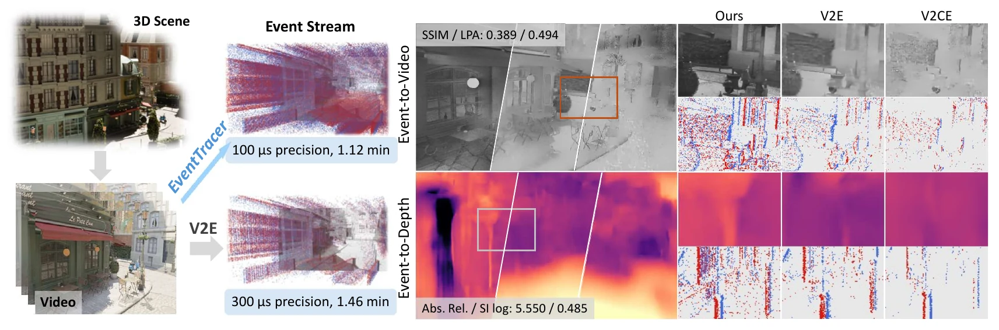
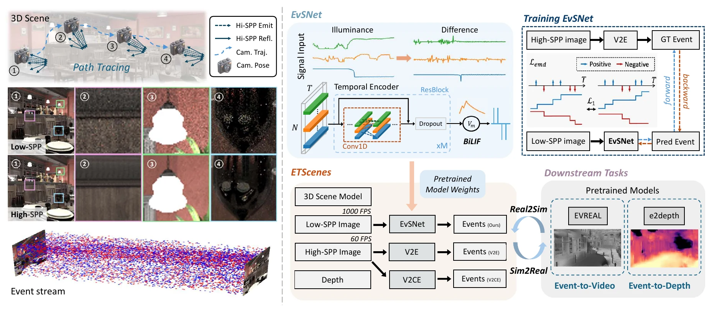
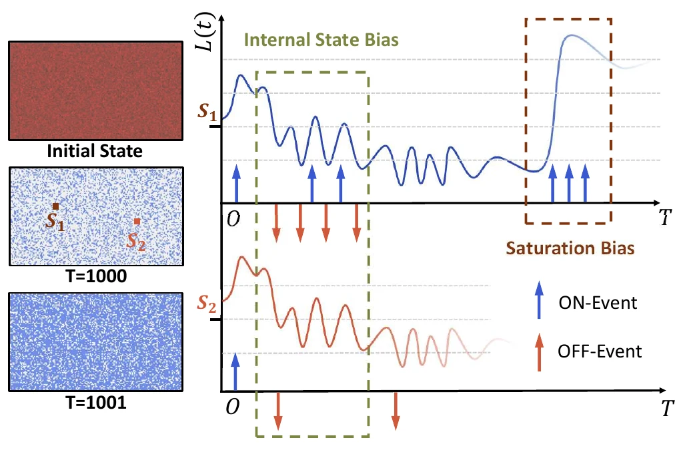
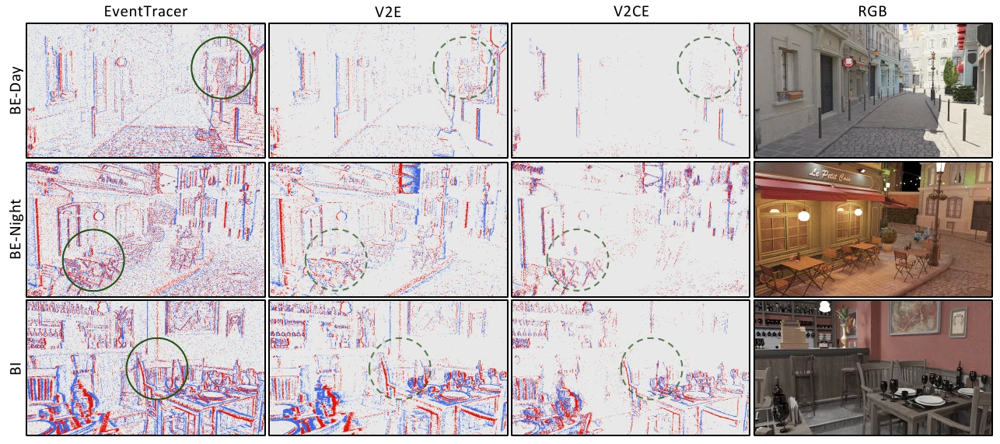
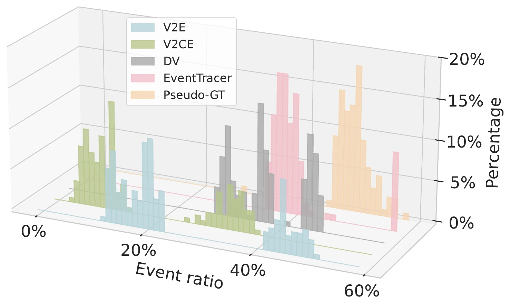
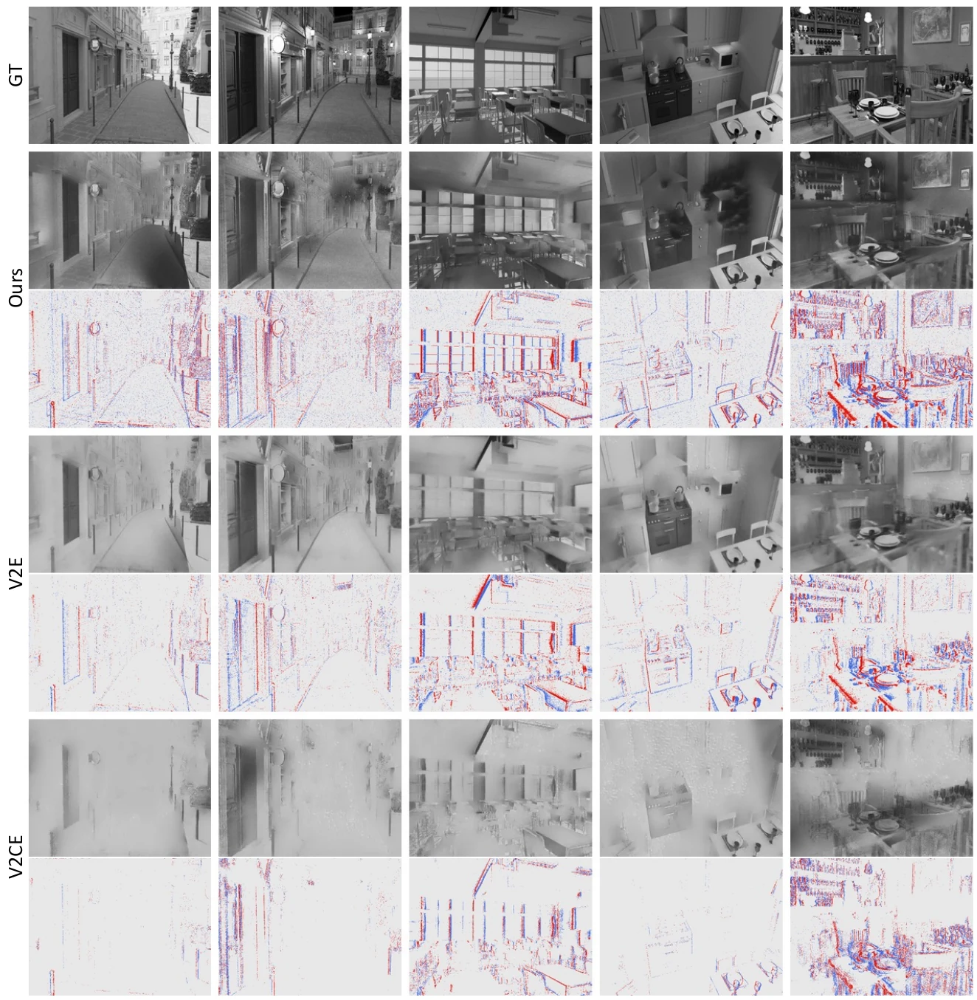
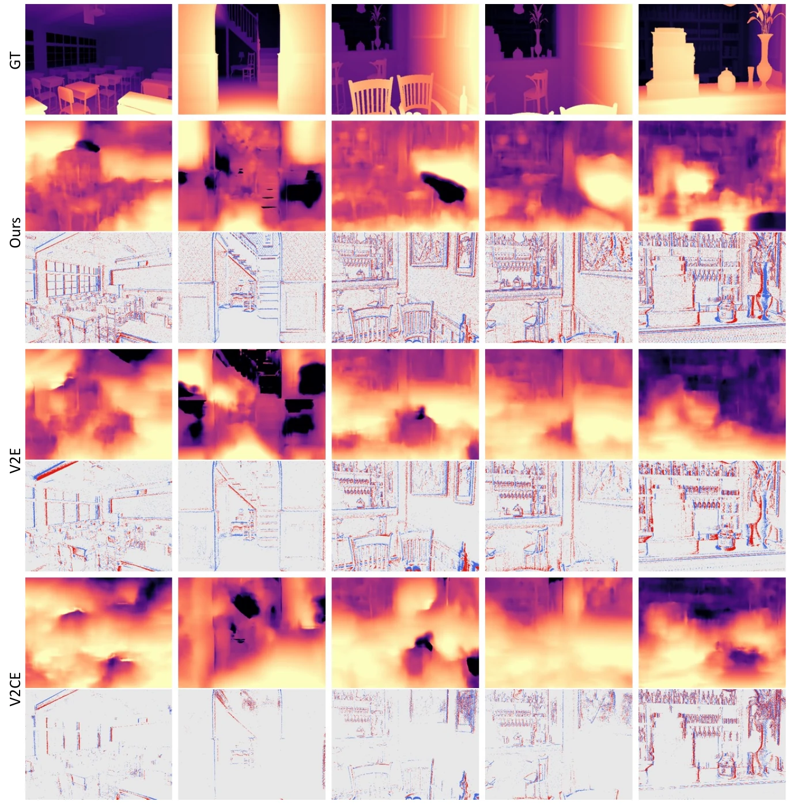
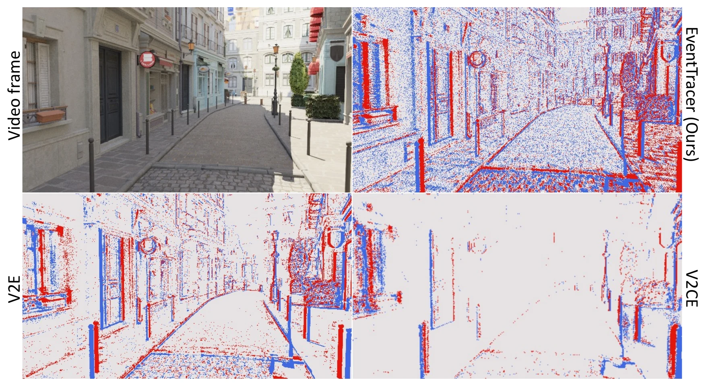

Path-Traced Event Rendering
Low-SPP Monte Carlo path tracing keeps 3D geometry, lighting, materials, and motion in the event-generation loop.

Abstract
Event cameras fire asynchronous positive and negative events whenever pixel brightness changes, making them attractive for fast motion, high dynamic range, robotics, autonomous driving, and AR/VR perception. Yet large-scale Event-RGB data remain difficult to collect because real sensors require careful hardware setup, calibration, synchronization, and task-specific annotations.
EventTracer is a path tracing-based rendering pipeline for efficient and physics-aware event simulation. It renders low-sample-per-pixel RGB sequences at high temporal resolution, then uses a lightweight event spiking network to convert noisy illuminance changes into realistic event pulses. A bipolar leaky integrate-and-fire unit and bidirectional EMD loss help model event polarity, internal state bias, and saturation behavior.
The resulting pipeline generates one second of 360p event video in about 1.12 minutes, supports 1,000 FPS event timestamps, and produces synthetic Event-RGB data that transfers better to real-world event vision tasks than common video-to-event simulators.
Key Features
Low-SPP Monte Carlo path tracing keeps 3D geometry, lighting, materials, and motion in the event-generation loop.
A pixel-wise temporal network predicts event pulses from noisy illuminance sequences and can be integrated into Falcor with TensorRT.
BiLIF activation models positive and negative polarity, internal state bias, and saturation effects that are hard to capture with frame differencing alone.
Evaluation combines event statistics with downstream event-to-video and event-to-depth transfer to test whether simulated data behaves like real data.
Method Overview

Traditional event simulators often work after RGB rendering is complete, which makes temporal resolution depend on costly noiseless frames. EventTracer instead makes event generation part of the rendering process: low-SPP path tracing provides high-FPS noisy illuminance, while EvSNet decides which changes correspond to event pulses.
This design keeps the advantages of 3D graphics, including controllable camera trajectories, scene geometry, depth maps, and future annotations such as normals, optical flow, and segmentation masks.

Event cameras are not simple frame-difference machines. Each pixel carries an internal state, and large illuminance changes can trigger a sequence of events rather than a single response. EventTracer uses BiLIF spiking to keep these dynamics explicit.
The network is deliberately local and lightweight, with a temporal receptive field of 43, so that it can run per pixel in parallel without reading an entire video clip.
Results





| Method | RMSE ↓ | KL ↓ | Corr ↑ |
|---|---|---|---|
| EventTracer | 0.071 | 0.833 | 0.830 |
| V2E | 0.112 | 4.657 | 0.472 |
| V2CE | 0.117 | 7.165 | 0.581 |
| DVS-Voltmeter | 0.098 | 1.266 | 0.711 |
Video
BibTeX
@article{li2026eventtracer,
title={EventTracer: Fast Path Tracing-based Event Stream Rendering},
author={Li, Zhenyang and Bai, Xiaoyang and Lu, Jinfan and Shen, Pengfei and Lam, Edmund Y. and Peng, Yifan},
journal={IEEE Transactions on Visualization and Computer Graphics},
pages={1--13},
year={2026},
doi={10.1109/TVCG.2026.3701141}
}Acknowledgements
The authors thank Dr. Shijie Lin for fruitful discussions. This work was partially supported by the National Science Foundation of China, the Research Grants Council of Hong Kong, and the Innovation and Technology Fund of Hong Kong.